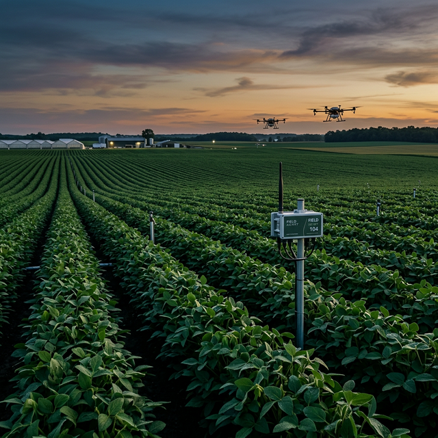
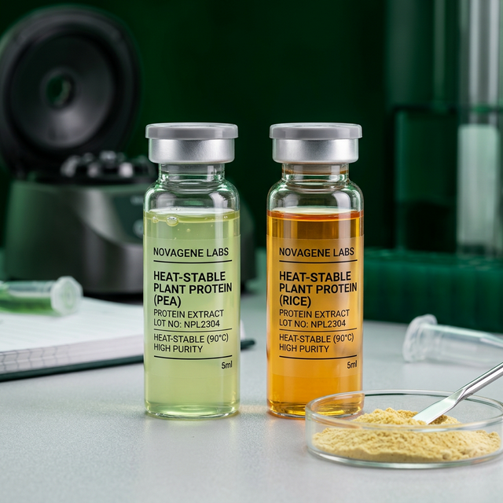
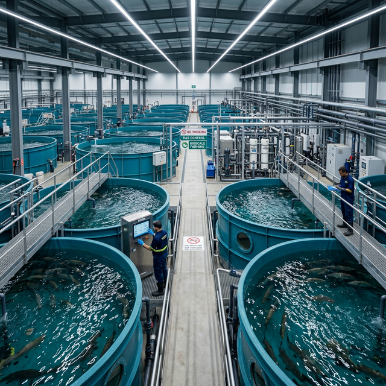
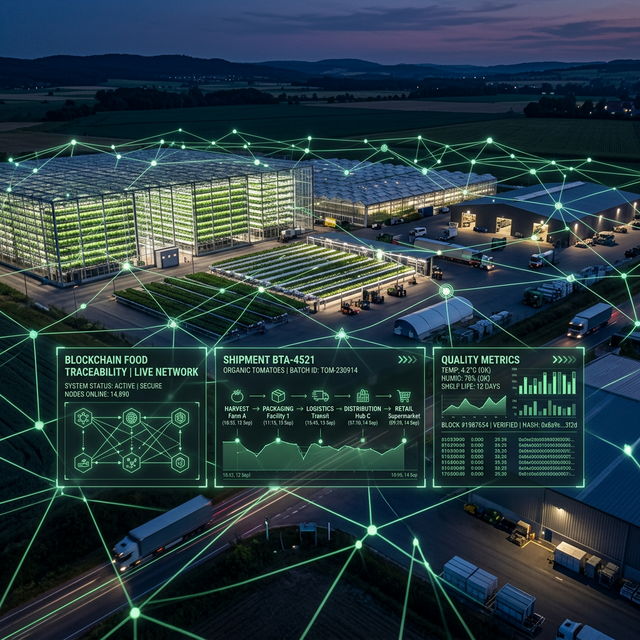
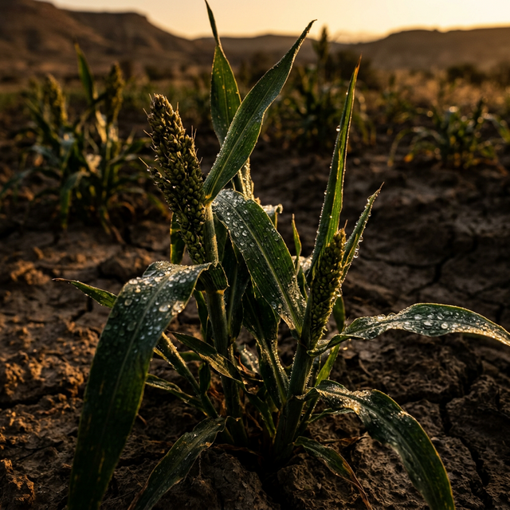

Albion Group Industries engineers resilient food systems, from heat-stable proteins to blockchain traceability, built for the realities of our climate, our continent, and our future.

"Our mission is to make nutritious, traceable, and climate-resilient food accessible to everyone, regardless of geography or infrastructure."
Traditional proteins spoil easily, require cold storage, and lose quality during transport. This drives high food waste, inflated logistics costs, and restricted access across hot climates.
AGI develops heat stable, shelf-resilient proteins engineered to remain safe and nutritious without refrigeration, cutting spoilage, reducing logistics dependency, and opening new markets across Africa.
Africa faces rapidly declining fish stocks, increasingly contaminated water sources, and outdated aquaculture systems that yield too little to meet growing demand.
AGI builds Recirculating Aquaculture Systems (RAS) that produce clean, high-yield fish in controlled environments, independent of climate, geography, or open water access.
Consumers and regulators have no reliable way to verify food origin. This creates conditions for fraud, contamination, unsafe supply chains, and eroded consumer trust.
AGI deploys blockchain traceability infrastructure that logs every stage of a product's journey, verifying origin, preventing counterfeits, and giving buyers, retailers, and regulators full end-to-end transparency.
Climate change is systematically destroying traditional crop yields across Africa, threatening food security for millions and decimating smallholder farmer income.
AGI identifies and scales unconventional crops including mung beans, sorghum, seaweed, and pistachio alternatives that are engineered by nature to thrive in harsh, dry, and unpredictable environments.

Conventional protein supply chains are built around refrigeration. In Africa, that assumption fails. Power outages, long distances, and infrastructure gaps mean that cold chains routinely break down, and the food that depends on them goes with them.
AGI engineers proteins at a molecular level to remain stable at ambient and elevated temperatures, enabling safe distribution across regions where cold infrastructure is absent or unreliable.
"Nutrition should not depend on an unbroken power supply."
Open-water fish farming is at the mercy of weather, pollution, and ecological decline. African fish stocks are under sustained pressure from overfishing and environmental degradation, and traditional pond systems cannot fill the gap.
AGI's RAS facilities recirculate and filter water in closed-loop systems, producing premium fish with consistent quality, no seasonal dependency, and zero reliance on healthy open-water ecosystems.
"A closed system is an honest system — what goes in is what comes out."


Food fraud costs the global economy billions annually. Mislabelled origin, tampered certifications, and contaminated batches reach consumers because no verifiable record exists to challenge them.
AGI's blockchain traceability platform creates an immutable log at every stage of the supply chain, from farm to shelf. Every transfer, every handler, every test result is recorded and visible to authorised parties in real time.
"Transparency is not optional. It is the product."
The crops that fed the last century were bred for a stable climate. That climate no longer exists across most of Africa. Maize, wheat, and traditional legumes are failing in regions where rainfall is unpredictable and temperatures are rising year on year.
AGI identifies, trials and scales crops that thrive precisely where conventional agriculture fails. Mung beans, sorghum, drought-tolerant seaweed varieties, and pistachio alternatives are among a growing portfolio of resilient species now being brought to commercial scale.
"The most resilient crop is the one nobody planted yet."

From the seed in the ground to the product on the shelf, AGI controls and connects every stage. We do not sell isolated solutions. We build complete systems that eliminate the gaps where value is lost.
Every AGI solution is stress-tested against the real conditions of African and emerging-market environments: high heat, erratic rainfall, limited infrastructure, and constrained cold chain access. If it does not work in the field, it does not leave the lab.
Blockchain traceability and open data architecture mean that every stakeholder, from smallholder farmer to institutional buyer, has visibility into the supply chain. Trust is not assumed. It is built in.
AGI is actively seeking investment partners, institutional buyers, and distribution collaborators across Africa and global emerging markets. We are building for the long term and we are looking for partners who are too.